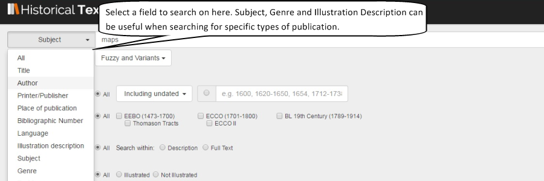
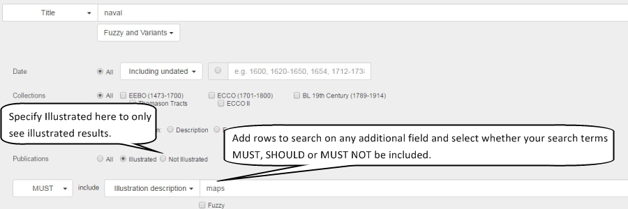

<div class="row">
    <div class="col-xs-12 topSpace">
        <div class="sideMenu">
            <div class="title">Support</div>
            <ul>
                <li><a href="">Support Home</a></li>
                <li><a href="/help/">Help File</a></li>
                <li><a href="/librarians/">Librarians</a></li>
                <li><a href="/faq/">FAQ</a></li>
				<li><a href="/quickref/">Quick Reference Guide</a></li>
				<li><a href="/features/">Features</a>
													 <ul>
            <li><a href="/blcovers">British Library Covers</a></li>
			<li><a href="/locallondon">Local History&#58; London</a></li>
			<li class="selected"><a href="/maps">Maps</a></li>
			<li><a href="/music">Music</a></li>
            <li><a href="/shakespeare">Shakespeare</a></li>
	<!--    <li><a href="/travel">Travel and Explorers</a></li>-->
            <li><a href="/witchcraft">Witchcraft</a></li>
            </ul>
			</li>
			
            </ul>
        </div>

        <div class="support">

            <ol class="breadcrumb">

				    <li><a href="/features/">Features</a></li>
                    <li class="active">Maps</a></li>

            </ol>


           <h1>Maps</h1>
           
           
           <p class="lead">Many users of the Historical Texts don&#39;t realise that maps are included among the many illustrations. We&#39;ve picked a selection out for your pleasure...</p>
		
		<br />
		

<h2>Maps from the Early English Books Online &#40;EEBO&#41; Collection</h2>

<p>Here we have &ldquo;A Decription of Jerusalem&rdquo;, a city map of Hull, &ldquo;Atlas Maritimus&rdquo;, a map of Canaan, an early map of the world 	&#40;Orbis Terrarum&#41; and a map from an early expedition to the Americas...</p>
       
<div class=row> <div class="col-sm-6 col-md-3"> <div class=thumbnail>  <div class=caption> <h3>A description and explanation of two hundred sixty and eight places in Jerusalem and the suburbs thereof as it flourished in the time of Jesus Christ</h3>
<p>Published&#58; 1677</p> <p><span class="badge">EEBO</span></p><p><a href=https://historicaltexts.jisc.ac.uk/eebo-99896176e class="btn btn-primary" role=button>View text</a> </p> </div> </div> </div> 

<div class=row> <div class="col-sm-6 col-md-3"> <div class=thumbnail>  <div class=caption> <h3>The town of Hull</h3></p>
<p>Published&#58; 1642</p> <p><span class="badge">EEBO</span></p><p><a href=https://historicaltexts.jisc.ac.uk/eebo-99870550e class="btn btn-primary" role=button>View text</a> </p> </div> </div> </div> 

<div class=row> <div class="col-sm-6 col-md-3"> <div class=thumbnail>  <div class=caption> <h3>Atlas maritimus, or The sea-atlas being a book of maritime cards</h3> <p>Published&#58; 1682</p> <p><span class="badge">EEBO</span></p><p><a href=https://data.historicaltexts.jisc.ac.uk/view?pubId=eebo-99831175e&index=eebo&pageId=eebo-99831175e-35638-5
 class="btn btn-primary" role=button>View text</a> </p> </div> </div> </div>
  

</div></div></div>


 <div class=row> <div class="col-sm-6 col-md-3"> <div class=thumbnail>  <div class=caption> <h3>Canaan</h3> <p>Published&#58; 16&#45;&#63;</p> <p><span class="badge">EEBO</span></p><p><a href=https://historicaltexts.jisc.ac.uk/eebo-ocn226320074e class="btn btn-primary" role=button>View text</a></p> </div> </div> </div> 
 
 <div class=row> <div class="col-sm-6 col-md-3"> <div class=thumbnail>  <div class=caption> <h3>Orbis terrarum typus de integro multis in locis emendatus</h3> <p>Published&#58; 1616</p> <p><span class="badge">EEBO</span></p><p><a href=https://historicaltexts.jisc.ac.uk/eebo-ocn180867371e class="btn btn-primary" role=button>View text</a> </p> </div> </div> </div>
  
 <div class=row> <div class="col-sm-6 col-md-3"> <div class=thumbnail>  <div class=caption> <h3>A new voyage round the world describing particularly the isthmus of America, several coasts and islands in the West Indies</h3> <p>Published&#58; 1699</p> <p><span class="badge">EEBO</span></p><p><a href=https://data.historicaltexts.jisc.ac.uk/view?pubId=eebo-ocm09523296e&index=eebo&pageId=eebo-ocm09523296e-43437-7
 class="btn btn-primary" role=button>View text</a> </p> </div> </div> </div> 

 </div></div></div>

 

 
<h2>Maps from the Eighteenth Century Collection Online &#40;ECCO&#41; Collection</h2>

<p>Here we have maps of the Chinese Empire, a description on the use of an Orrery, the naval history of Great Britain, a description of Patagonia and South America, a universal dictionary of trade and commerce, and Kitchen&#45;s General Atlas....</p>
 
 <div class=row> <div class="col-sm-6 col-md-3"> <div class=thumbnail>  <div class=caption> <h3>A description of the empire of China and Chinese&#45;Tartary, together with the kingdoms of Korea, and Tibet</h3> <p>Published&#58; 1738&#45;41</p><p><span class="badge">ECCO</span></p><p><a href=https://data.historicaltexts.jisc.ac.uk/view?pubId=eccoii-1729700102&index=eccoii&pageId=eccoii-1729700102-2440 class="btn btn-primary" role=button>View text</a> </p> </div> </div> </div> 
 
 <div class=row> <div class="col-sm-6 col-md-3"> <div class=thumbnail>  <div class=caption> <h3>The description and use of the globes and the orrery. To which is prefix&#39;d, by way of introduction, a brief account of the solar system.</h3><p>Published&#58; 1745</p> <p><span class="badge">ECCO</span></p><p><a href=https://data.historicaltexts.jisc.ac.uk/view?pubId=ecco-0963700100&index=ecco&pageId=ecco-0963700100-480 class="btn btn-primary" role=button>View text</a> </p> </div> </div> </div>  
 
  <div class=row> <div class="col-sm-6 col-md-3"> <div class=thumbnail>  <div class=caption> <h3>The naval history of Great Britain&#59; from the earliest times to the rising of the Parliament in 1779</h3><p>Published&#58; 1779</p> <p><span class="badge">ECCO</span></p><p><a href=https://data.historicaltexts.jisc.ac.uk/view?pubId=eccoii-1610500502&index=eccoii&pageId=eccoii-1610500502-1900 class="btn btn-primary" role=button>View text</a> </p> </div> </div> </div> 
  
   </div></div></div>   

 
 <div class=row> <div class="col-sm-6 col-md-3"> <div class=thumbnail>  <div class=caption> <h3>A description of Patagonia, and the adjoining parts of South America</h3> <p>Published&#58; 1774</p><p><span class="badge">ECCO</span></p><p><a href=https://data.historicaltexts.jisc.ac.uk/view?pubId=ecco-0807000800&index=ecco&pageId=ecco-0807000800-20 class="btn btn-primary" role=button>View text</a> </p> </div> </div> </div> 
 
 <div class=row> <div class="col-sm-6 col-md-3"> <div class=thumbnail>  <div class=caption> <h3>The universal dictionary of trade and commerce: with large additions and improvements adapting the same to the present state of British affairs in America</h3><p>Published&#58; 1766</p> <p><span class="badge">ECCO</span></p><p><a href=https://data.historicaltexts.jisc.ac.uk/view?pubId=eccoii-1321800102&index=eccoii&pageId=eccoii-1321800102-9660
 class="btn btn-primary" role=button>View text</a> </p> </div> </div> </div>  
 
  <div class=row> <div class="col-sm-6 col-md-3"> <div class=thumbnail>  <div class=caption> <h3>Kitchen's general atlas, describing the whole universe&#59; being a complete collection of the most approved maps extant</h3><p>Published&#58; 1797</p> <p><span class="badge">ECCO</span></p><p><a href=https://data.historicaltexts.jisc.ac.uk/view?pubId=eccoii-1352200200&index=eccoii&pageId=eccoii-1352200200-70 class="btn btn-primary" role=button>View text</a> </p> </div> </div> </div> 
  
   </div></div></div>    
   

   
   <h2>Maps from the British Library 19th Century Collection &#40;BL&#41;</h2>

<p>Here we have maps of Arthurian localities, an atlas, German city maps, the Roman road from Allchester to Dorchester, footpaths in the parish of Islington, and a hand book for travellers in Spain...</p> 

  <div class=row> <div class="col-sm-6 col-md-3"> <div class=thumbnail>  <div class=caption> <h3>Arthurian localities their historical origin, chief country and Fingalian relations</h3> <p>Published&#58; 1869</p><p><span class="badge">BL</span></p><p><a href=https://data.historicaltexts.jisc.ac.uk/view?pubId=bl-010855206&index=bl&pageId=bl-010855206-1004170-17 class="btn btn-primary" role=button>View text</a> </p> </div> </div> </div> 
 
 <div class=row> <div class="col-sm-6 col-md-3"> <div class=thumbnail>  <div class=caption> <h3>Atlas</h3><p>Published&#58; 1836</p> <p><span class="badge">BL</span></p><p><a href=https://data.historicaltexts.jisc.ac.uk/view?pubId=bl-001772841&index=bl&pageId=bl-001772841-994621-29 class="btn btn-primary" role=button>View text</a> </p> </div> </div> </div>  
 
  <div class=row> <div class="col-sm-6 col-md-3"> <div class=thumbnail>  <div class=caption> <h3>Neumanns Orts&#45;Lexikon des Deutschen Reichs</h3><p>Published&#58; 1894</p> <p><span class="badge">BL</span></p><p><a href=https://data.historicaltexts.jisc.ac.uk/view?pubId=bl-002629358&index=bl&pageId=bl-002629358-1069676-152 class="btn btn-primary" role=button>View text</a> </p> </div> </div> </div> 
  
   </div></div></div>   

 
 <div class=row> <div class="col-sm-6 col-md-3"> <div class=thumbnail>  <div class=caption> <h3>An account of the Roman Road from Allchester to Dorchester, and other Roman Remains in the neighbourhood being the substance of a paper read to the Ashmolean Society, Nov. 9, 1840</h3> <p>Published&#58; 1841</p><p><span class="badge">BL</span></p><p><a href=https://data.historicaltexts.jisc.ac.uk/view?pubId=bl-002738602&index=bl&pageId=bl-002738602-979890-65 class="btn btn-primary" role=button>View text</a> </p> </div> </div> </div> 
 
 <div class=row> <div class="col-sm-6 col-md-3"> <div class=thumbnail>  <div class=caption> <h3>The history and antiquities of the parish of Islington, in the county of Middlesex including biographical sketches of the most eminent and remarkable inhabitants</h3><p>Published&#58; 1823</p> <p><span class="badge">BL</span></p><p><a href=https://data.historicaltexts.jisc.ac.uk/view?pubId=bl-002619002&index=bl&pageId=bl-002619002-953552-8 class="btn btn-primary" role=button>View text</a> </p> </div> </div> </div>  
 
  <div class=row> <div class="col-sm-6 col-md-3"> <div class=thumbnail>  <div class=caption> <h3>A hand-book for travellers in Spain and readers at home describing the country and cities</h3><p>Published&#58; 1845</p> <p><span class="badge">BL</span></p><p><a href=https://data.historicaltexts.jisc.ac.uk/view?pubId=bl-002591073-01&index=bl&pageId=bl-002591073-01-948144-577 class="btn btn-primary" role=button>View text</a> </p> </div> </div> </div> 
  
   </div></div></div>    
 
 <h2>Search tips</h2>
 
 <p>Users looking for map content on Historical Texts can search the Illustration Description field for &ldquo;maps&rdquo;, although this will only yield results for the EEBO and ECCO collections due to restrictions in the metadata. Searching the Genre or Subject fields for &ldquo;maps&rdquo; yields a small number of results, all from EEBO.</p>
 
 <br />
 
 
 <br />
 <br />
 
 <p>All map content should be marked as &ldquo;Illustrated&rdquo; in the metadata, so restricting searches to &ldquo;Illustrated Only&rdquo; will also help narrow down your results. You can add rows to use the Must or Must Not conditions and build more complex searches.</p>
 
 <br /> 

 
 
 
   <!--start hide
   
   
    <div class=row> <div class="col-sm-6 col-md-3"> <div class=thumbnail>  <div class=caption> <h3>Seven songs for the harpsichord or forte piano. The words and music composed by Francis Hopkinson.</h3> <p>Published&#58; 1788</p><p><span class="badge">ECCO</span></p><p><a href=https://data.historicaltexts.jisc.ac.uk/view?pubId=eccoii-1484000800&index=eccoii&pageId=eccoii-1484000800-30 class="btn btn-primary" role=button>View text</a> </p> </div> </div> </div> 
 
 <div class=row> <div class="col-sm-6 col-md-3"> <div class=thumbnail>  <div class=caption> <h3>Flowers of Paradise. Music, verse, design & illustration by R. F. Hallward.</h3><p>Published&#58; 1889</p> <p><span class="badge">BL</span></p><p><a href=https://data.historicaltexts.jisc.ac.uk/view?pubId=bl-001574815&index=bl&pageId=bl-001574815-626917-30 class="btn btn-primary" role=button>View text</a> </p> </div> </div> </div>  
 
  <div class=row> <div class="col-sm-6 col-md-3"> <div class=thumbnail>  <div class=caption> <h3>Music from unidentifed source</h3><p>Published&#58; 15&#45;&#45;&#63;</p> <p><span class="badge">EEBO</span></p><p><a href=https://historicaltexts.jisc.ac.uk/eebo-ocm61741638e class="btn btn-primary" role=button>View text</a> </p> </div> </div> </div> 
  
   </div></div></div>   
   

   

<h2>Search tips</h2>

<p>Users can perform a Subject search for Music directly from the Search box using the drop&#45;down arrow. 
<br />
With early material, the Variant Spelling and Variant Forms in particular can be useful in order to find more material that regular searches might miss.</p>
<p>It is also worth considering restricting your search to "Illustrated" if you are looking for scores and sheet music to narrow your results down, although this will only be partially effective as any kind of illustration will pass the filter.</p>
<p>

<p/>

<br />
<p>Searches can be filtered by Genre or Subject using the options in the sidebar. Please be aware that the Subject option will only return results from EEBO collection, not the ECCO or BL collections.</p>
<br />


        
        
        </div>
        </div>
    </div>
	
end hide -->